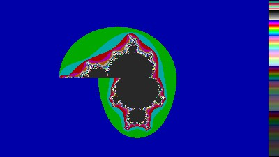

A built-in fractal interpreter for creating custom formulas without a compiler.
ManpWIN includes a direct formula parser that allows users to create and run custom fractal formulas interactively.
The following documentation is based on material supplied by Mark Peterson, who wrote the original formula interpreter.
Formula fractals allow you to create your own fractal formulas. The general format is:
Mandelbrot(XAXIS) { z = Pixel: z = sqr(z) + pixel, |z| <= 4 }
| Name | Symmetry | Initial Condition | Iteration | Bailout Criteria |
|---|---|---|---|---|
| Mandelbrot | XAXIS | z = Pixel | z = sqr(z) + pixel | |z| <= 4 |
In the direct formula parser, the code may also be written on one line, provided each section is separated by commas.
Initial conditions:
z = c = pixel
Formula:
if (imag(c) > 0), z1 = z*z + pixel, else, z1 = z*z*z + pixel, endif, z = z1;
Bailout:
|z| < 4.0
This generates a Mandelbrot set in the upper half of the image and a cubic in the bottom half:

Initial conditions are set first, then the iterations are performed while the
bailout condition remains true or until z enters a periodic loop.
All variables are created automatically by use and are treated as complex values. If you declare:
v = 2
then v is treated as a complex value with an imaginary component of zero.
For periodicity checking, inside options, outside options, and the passes=o
option to work correctly, the result of the orbit calculation must be left in the variable z.
Sequential processing of the formula can be altered using flow control instructions:
IF(expr1) statements ELSEIF(expr2) statements ... ELSEIF(exprn) statements ELSE statements ENDIF
The expressions are evaluated in order, and the statements immediately following
the first true expression are executed. Nesting of IF..ENDIF blocks is permitted.
| Variable | Description |
|---|---|
| z | Used for periodicity checking |
| p1 | Parameters 1 and 2 |
| p2 | Parameters 3 and 4 |
| p3 | Parameters 5 and 6 |
| p4 | Parameters 7 and 8 |
| p5 | Parameters 9 and 10 |
| pixel | Complex coordinates of the current pixel |
| LastSqr | Modulus from the last sqr() call |
| rand | Complex random number |
| pi | (3.14159..., 0.0) |
| e | (2.71828..., 0.0) |
| maxit | (maxit, 0) maximum iterations |
| scrnmax | (xdots, ydots) maximum horizontal and vertical resolution |
| scrnpix | (col, row) pixel screen coordinates |
| whitesq | Checkerboard value based on screen position |
| ismand | True by default; changes when Mandelbrot/Julia toggle is used |
| center | Zoom box centre coordinates |
| magxmag | Zoom magnification values |
| rotskew | Zoom rotation and skew values |
| Level | Operators / Functions |
|---|---|
| 1 | sin(), cos(), sinh(), cosh(), cosxx(), tan(), cotan(), tanh(), cotanh(), sqr(), log(), exp(), abs(), conj(), real(), imag(), flip(), fn1(), fn2(), fn3(), fn4(), srand(), asin(), asinh(), acos(), acosh(), atan(), atanh(), sqrt(), cabs(), floor(), ceil(), trunc(), round() |
| 2 | Negation (-), power (^) |
| 3 | Multiplication (*), division (/) |
| 4 | Addition (+), subtraction (-) |
| 5 | Assignment (=) |
| 6 | <, <=, >, >=, ==, != |
| 7 | &&, || |
Precedence may be overridden with parentheses. The modulus-squared operator
|z| is also parenthetic and always returns a real value.
For example:
c * |z + (|pixel|)|
The functions fn1(...) to fn4(...) are variable functions.
When used, the user is prompted at run time to select functions such as
sin, cos, sinh, cosh, exp,
log, sqr, and others.
| Function | Meaning |
|---|---|
| abs() | Returns abs(x) + i*abs(y) |
| |x+iy| | Returns x*x + y*y |
| cabs() | Returns sqrt(x*x + y*y) |
| conj() | Returns the complex conjugate: (x,y) becomes (x,-y) |
| cosxx() | Duplicates a bug in the version 16 cos() function |
| flip() | Swaps real and imaginary parts |
| ident() | Identity function; leaves the value unchanged |
| zero() | Returns 0 |
| one() | Returns 1 |
| floor() | Largest integer not greater than the argument |
| ceil() | Smallest integer not less than the argument |
| trunc() | Truncates fractional part toward zero |
| round() | Rounds to nearest integer or up |
Formulas are performed using either integer or floating point mathematics, depending on the floating point setting. If no FPU is present, type MPC math is used in place of traditional floating point.
The predefined variable rand changes on each iteration to a new random number
with real and imaginary components between zero and one.
Use srand() to initialise the random sequence consistently.
A formula containing one of the predefined variables maxit, scrnpix,
or scrnmax will automatically be run in floating point mode.
Rounding functions should be used with care. Formulas that depend on exact values may not behave reliably in all cases.
The possible symmetry values are:
XAXIS, XAXIS_NOPARM YAXIS, YAXIS_NOPARM XYAXIS, XYAXIS_NOPARM ORIGIN, ORIGIN_NOPARM PI_SYM, PI_SYM_NOPARM XAXIS_NOREAL XAXIS_NOIMAG
These force symmetry even if no symmetry is actually present, so formulas should normally be tested without symmetry first.